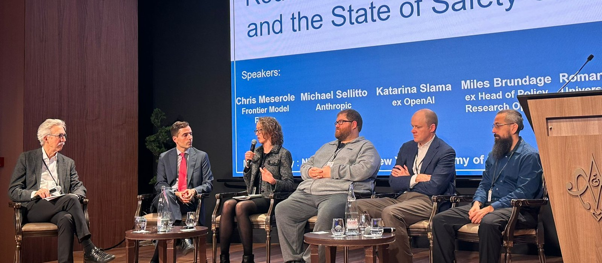

Empirical AI safety and governance research.
I do empirical research on AI safety: model evaluations, alignment, and the behavior of frontier models. I co-authored InstructGPT at OpenAI, and I led model behavior research at the UK AI Security Institute. I hold a PhD in neuroscience from UC Berkeley.
I am open to advisory roles, committee work, and speaking engagements. The best way to reach me is on LinkedIn.
Research
Preferences and behavior. When do a language model's own out-of-context preferences predict the actions it takes and the advice it gives? A preregistered study, published in TMLR, tests this across models and settings.
Methodology for studying model behavior. Claims about model behavior need the same evidential standards as claims about animal behavior. Lessons from a chimp lays out what those standards should be.
Learning from human feedback. InstructGPT showed that RLHF can be used to teach LLMs to follow general instructions; it became the basis for ChatGPT.
Governing agentic systems. Practices for governing agentic AI systems proposes baseline safety and accountability practices for developers, deployers, and users of AI agents.
Recent
Paper, Transactions on Machine Learning Research, 2026
When do LLM preferences predict downstream behavior?
With Alexandra Souly, Dishank Bansal, Henry Davidson, Christopher Summerfield, and Lennart Luettgau. A preregistered study of the extent to which the preferences that LLMs report predict how they act.

Selected publications
Selected talks
- 1 September 2026Ex-OpenAI researcher on AI cyber attacks
Podcast episode, Ja ihminen loi älyn, Aalto University, Helsinki - 22 December 2025Introduction to AI Safety Institutes
Tutke, the Finnish Center for Safe AI, Helsinki - 28 October 2025AI safety, near and far
Opening keynote, ODSC AI West, San Francisco - 9 February 2025Are frontier labs ready for AGI?
Roundtable on frontier labs and AI safety, AI Safety Connect at the Paris AI Action Summit - 4 May 2023The code interpreter: applications to data science and neuroscience
Invited talk, IBM, San Francisco